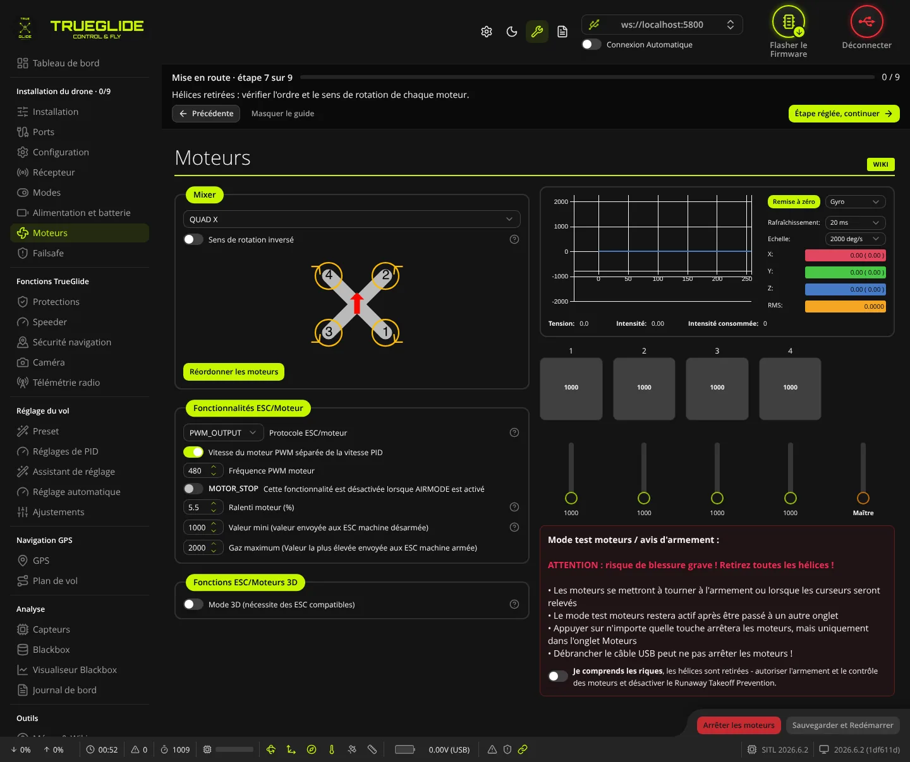
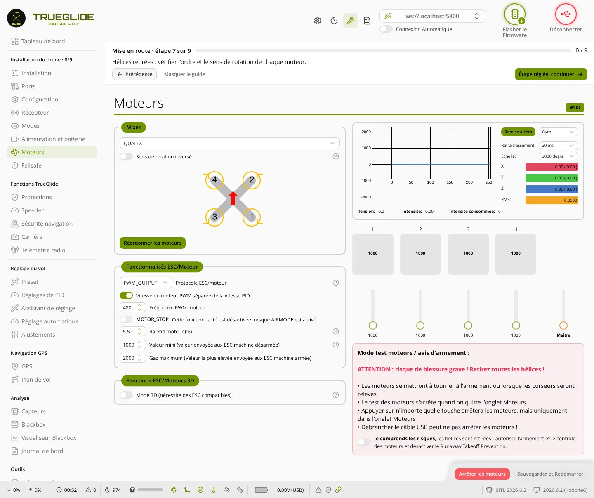

TRUE
TRUEMoteurs
L'onglet Moteurs (groupe « Installation du drone ») sert à choisir le mixeur et le protocole des ESC, puis à tester chaque moteur un par un pour vérifier son ordre et son sens de rotation, hélices retirées.


Mixer
- Liste du mixeur (en haut du cadre) : la forme du drone (QUAD X, HEX X, OCTO X8…), classée par ordre alphabétique. Le schéma en dessous montre la place et le numéro de chaque moteur, et son sens de rotation.
- Sens de rotation inversé : dit au contrôleur de vol que tous les moteurs tournent dans le sens inverse du schéma (« props out »). Le schéma se met à jour. Cette option ne change pas le sens réel des moteurs : pour cela, utilisez Direction du moteur, le logiciel de configuration des ESC, ou croisez deux fils du moteur.
- Réordonner les moteurs : visible seulement pour les mixeurs prévus (Quad X, Quad +, Hex X, Octo X8, Tricopter…) et si le firmware le permet. Après « Je comprends les risques » (hélices retirées, batterie branchée), l'assistant fait tourner les moteurs un par un ; vous cliquez sur l'image à l'endroit du moteur qui tourne. À la fin, vous pouvez vérifier l'ordre en cliquant sur l'image, puis Enregistrer (la carte redémarre) ou Commencer pour recommencer. L'assistant ne réordonne que les moteurs déjà actifs ; un changement plus complexe passe par la commande
resourcedu CLI. - Direction du moteur : visible seulement avec un protocole DShot. Change le sens de rotation de chaque moteur par une commande DShot. Il faut cocher « Je comprends les risques » (hélices retirées), puis choisir Individuellement (sélectionner un moteur, le tester, le mettre en « Normal » ou « Inverser ») ou Assistant (tous les moteurs tournent, on clique sur ceux à inverser). La batterie doit être branchée. Le sens est enregistré dans l'ESC dès la sélection. Certains ESC DShot ne répondent pas à cette fenêtre.
Les deux boutons sont grisés tant que des réglages ne sont pas sauvegardés, ou pendant un test moteur.
Fonctionnalités ESC/Moteur
Les lignes affichées dépendent du protocole choisi.
- Protocole ESC/moteur : le protocole entre la carte et les ESC (DSHOT150, DSHOT300, DSHOT600, PROSHOT1000, protocoles analogiques…). « DISABLED » est en tête de liste. Les protocoles absents du firmware de la carte sont grisés. Avec « DISABLED », un message orange demande de choisir un protocole.
- Vitesse du moteur PWM séparée de la vitesse PID et Fréquence PWM moteur (200 à 32 000) : seulement avec un protocole analogique.
- MOTOR_STOP : les moteurs ne tournent pas à l'armement. L'interrupteur est grisé quand AIRMODE est activé.
- ESC_SENSOR (DShot seulement) : télémétrie des ESC KISS/BLHeli_32 par un fil séparé.
- DShot bi-directionnel (requiert un firmware ESC compatible) (DShot seulement) : les ESC renvoient la vitesse des moteurs. Nécessaire au filtrage RPM, au ralenti dynamique, et aux fonctions de santé moteurs de l'onglet Protections.
- Pôles moteur (nombre d'aimants sur la cloche moteur) (4 à 255) : visible avec le DShot bi-directionnel ou ESC_SENSOR. C'est le nombre d'aimants sur la cloche, pas le nombre de bobines. Une valeur fausse donne une vitesse fausse.
- Ralenti moteur (%) : 0 à 20 %, par pas de 0,1. Vitesse des moteurs armés gaz en bas.
- Valeur du ralenti dynamique [* 100 RPM] : visible avec le DShot bi-directionnel. Lecture seule ici : elle se règle dans l'onglet Réglages de PID.
- Valeur mini (valeur envoyée aux ESC machine désarmée) et Gaz maximum (Valeur la plus élevée envoyée aux ESC machine armée) : 0 à 2000, seulement avec un protocole analogique.
Quand on active ou coupe le DShot bi-directionnel avec le filtre RPM actif, une fenêtre « Changement des valeurs de filtrage dynamique » propose de remettre les filtres coupe-bande dynamiques aux valeurs recommandées : Accepter les remet, Annuler garde les valeurs actuelles.
Fonctions ESC/Moteurs 3D
- Mode 3D (nécessite des ESC compatibles) : pour les ESC qui tournent dans les deux sens.
- bande neutre 3D niveau bas (1250 à 1600), bande neutre 3D niveau haut (1400 à 1750) et Neutre 3D (1400 à 1600) : visibles seulement en mode 3D.
Graphique des vibrations
En haut à droite, un graphique trace le gyroscope ou l'accéléromètre. Il sert à comparer les vibrations pendant qu'un moteur tourne (hélices retirées).
- Gyro / Accel : le capteur tracé. Pour l'accéléromètre, la première mesure sert de zéro.
- Rafraîchissement : 10 à 1000 ms entre deux mesures. Echelle : hauteur du graphique (deg/s pour le gyroscope, g pour l'accéléromètre).
- X, Y, Z : valeur actuelle de chaque axe, avec entre parenthèses la plus forte valeur vue. RMS : moyenne quadratique des 300 derniers points des trois axes.
- Remise à zéro : efface le graphique et les valeurs les plus fortes.
- Tension, Intensité, Intensité consommée : mesures de la batterie (voir Alimentation et batterie).
Ces choix d'affichage sont gardés par le logiciel d'une session à l'autre.
Barres et télémétrie des moteurs
- Barres 1, 2, 3… : une barre par moteur. Pendant un test, elles montrent la valeur reçue du contrôleur de vol (1000 à 2000 en DShot). Hors test, elles affichent la valeur d'arrêt.
- Télémétrie (sous les barres) : seulement avec le DShot bi-directionnel ou ESC_SENSOR. « RPM » = vitesse du moteur ; « Err » = taux d'erreur de la télémétrie DShot, en rouge au-dessus de 1 % ; « Temp » = température de l'ESC quand il la donne.
Tester les moteurs pas à pas
- Retirez toutes les hélices. Branchez la batterie (un smoke stopper est conseillé pour un premier essai).
- Sauvegardez d'abord vos réglages. Tant qu'un réglage n'est pas sauvegardé, le test est refusé : une fenêtre l'indique et l'interrupteur se recoupe.
- Activez l'interrupteur Je comprends les riques, les hélices sont retirées (texte affiché tel quel par le logiciel). Cela autorise l'armement et le contrôle des moteurs, et désactive la protection Runaway Takeoff Prevention. Avec un protocole DShot, le logiciel demande aussi aux ESC d'activer la télémétrie étendue.
- Montez doucement le curseur d'un seul moteur. Vérifiez sur le schéma du cadre Mixer que c'est le bon moteur qui tourne, et dans le bon sens.
- Redescendez le curseur, puis passez au moteur suivant.
- Le curseur Maître bouge tous les moteurs ensemble. La molette de la souris, sur un curseur, change la valeur par pas de 25.
- Pour arrêter : bouton Arrêter les moteurs en bas, ou n'importe quelle touche du clavier, sauf les flèches haut et bas, Page préc., Page suiv., Début, Fin, Alt et Tab. La touche ne marche que dans l'onglet Moteurs.
- Coupez le test (interrupteur ou Arrêter les moteurs) avant de changer d'onglet ou de débrancher.
Le test se coupe aussi si un réglage change pendant le test. Si le drone est armé par la radio pendant le test, les curseurs se bloquent et reviennent à la valeur d'arrêt.
Un moteur dans le mauvais sens : utilisez Direction du moteur (DShot), le logiciel de configuration des ESC, ou croisez deux fils du moteur. Un moteur à la mauvaise place : utilisez Réordonner les moteurs.
Sauvegarder et Redémarrer
Le bouton Sauvegarder et Redémarrer s'active dès qu'un réglage change. Il coupe d'abord le test et envoie l'ordre d'arrêt à tous les moteurs, puis envoie la configuration, l'enregistre et redémarre le contrôleur de vol. Le logiciel se reconnecte ensuite.